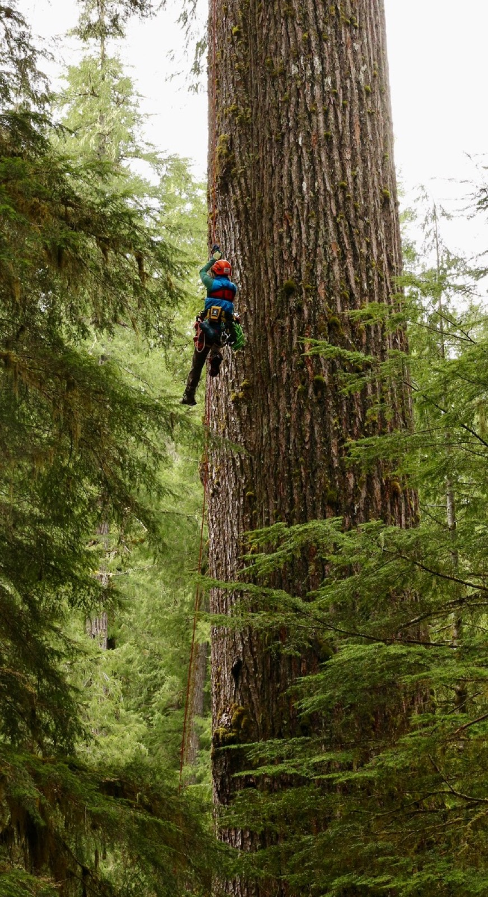

Research
We address basic and applied questions at the interface of wildlife ecology, molecular biology, and conservation science — spanning the Neotropics, Alaska, and the Pacific Northwest.
Reading Ecosystems
Through DNA
We operate an environmental genetics lab with separate spaces for high-DNA and low-DNA applications as well as a biosafety lab for working with pathogens. Our facilities include multiple UV-irradiated laminar-flow PCR cabinets to minimize contamination risks.
We have processed over 10,000 carnivore scats from across the Pacific Northwest and Alaska using DNA metabarcoding for diet analysis, giving us an unprecedented window into predator food webs. Our approaches include:
- → Environmental DNA (eDNA) for aquatic species detection and abundance
- → DNA metabarcoding for diet analysis and food-web reconstruction
- → Noninvasive SNP genotyping via high-throughput amplicon sequencing
- → Bear saliva DNA from salmon streams to identify individuals and estimate density
- → Oregon Biodiversity Genome Project — full mitogenome sequencing of aquatic vertebrates
We collaborate with the Chilkoot Indian Association (Alaska) on eulachon eDNA monitoring, now in its 7th year, and with numerous state and federal agencies on species detection and management.
Related Publications →
Predators, Prey, and
Species Interactions
How does the presence of one species influence others? Do predators protect our health by reducing the abundance of disease hosts? These are among the central questions driving our work in wildlife ecology.
We examine how top predators — wolves, cougars, bears, coyotes — structure communities through both direct predation and indirect behavioral effects (the "landscape of fear"). Key research areas include:
- → Large carnivore community ecology at Starkey Experimental Forest (60+ GPS-collared animals)
- → Pacific Northwest small carnivore ecology: Pacific fisher, Humboldt marten, western spotted skunks
- → Wolf–coyote–fox trophic cascades and their ecosystem consequences
- → Brown bear ecology: predation, seed dispersal, and ecosystem engineering
- → Passive acoustic monitoring and AI-assisted species detection (PNW-Cnet, Njobvu-AI)
Wildlife, People &
the Neotropics
How can we manage Neotropical wildlife to support human livelihoods while conserving biodiversity? This fundamental tension motivates our work in Amazonia, Central America, and beyond.
We have pioneered quantitative approaches to assess the long-term sustainability of subsistence hunting, working with indigenous communities in Peru, Brazil, and Guatemala. Our work bridges traditional ecological knowledge, game theory, and molecular biology to develop conservation strategies that work for both wildlife and people.
- → Sustainability assessment of indigenous hunting in Manu National Park, Peru
- → Biodemographic hunting models for wildlife management planning
- → Jaguar density, diet, and behavior in the Brazilian Pantanal and Amazon
- → Seed dispersal by large mammals and the consequences of defaunation
- → Tropical forest hyperdiversity maintenance through enemy-mediated mechanisms
The Ocean–Forest
Connection
The ocean feeds the forest. Pacific salmon return from the sea to spawn and die, delivering marine-derived nutrients that sustain bears, wolves, eagles, and entire terrestrial ecosystems. But salmon are not the only marine subsidy shaping Pacific Northwest wildlife — sea otters are too.
Our research in the Alexander Archipelago of Southeast Alaska has revealed a striking cascade: the recovery of sea otters reduced sea urchin populations, allowing kelp forests to rebound. Kelp-associated fish became a novel prey base that reshaped the diet, connectivity, and behavior of island wolves. This cross-ecosystem linkage — from ocean predator to wolf pack — represents one of the most compelling demonstrations of marine-terrestrial connectivity in the scientific literature.
- → Sea otter recovery, kelp forest rebound, and wolf diet transformation in island systems
- → Island wolf connectivity, individual dietary specialization, and population structure
- → Salmon eDNA for population enumeration and fisheries management
- → Grizzly bears as indicators of harvest-ecosystem tradeoffs in salmon fisheries
- → Bears as primary seed dispersers in salmon-bearing ecosystems
- → Chinook salmon bycatch dynamics in Pacific hake fisheries
Biodiversity, Forests
& Human Health
Are intact wildlife communities and unfragmented forests good for our health? What ecological changes allow zoonotic diseases to suddenly emerge as major public health problems? These are the questions we investigate.
Our current disease ecology work focuses on how deforestation in the southern Amazon affects the relationships between hosts, vectors, and pathogens — particularly for leishmaniasis, transmitted by sand flies. We also maintain an active program on white-nose syndrome in North American bats, with fieldwork at Mount Rainier and other National Park sites.
- → Leishmaniasis transmission ecology along Amazon deforestation gradients
- → White-nose syndrome surveillance and bat conservation
- → Community ecology of Lyme disease: deer, predators, and tick-borne pathogens
- → Dilution effect: does biodiversity protect humans from infectious disease?
- → Climate warming effects on blacklegged tick phenology and Lyme disease risk
Cascadia Forest Management
for Wildlife & Biodiversity
The forests of the Pacific Northwest and broader Cascadia region are among the most ecologically productive and economically important in the world. Navigating the tension between timber production and the needs of wildlife — from old-growth dependent species to wide-ranging carnivores — demands rigorous, place-based science translated into actionable management guidance.
We work with state and federal land managers, tribes, and conservation organizations to develop management recommendations grounded in the best available data. Our research informs harvest planning, habitat connectivity, species recovery, and biodiversity monitoring across forest landscapes that are simultaneously managed for wood production and ecological function.
- → Distribution and habitat requirements of Humboldt marten, Pacific fisher, and western spotted skunk
- → Northern Spotted Owl occupancy and acoustic monitoring across managed landscapes
- → Elk and deer response to timber harvest, fire history, and predator recovery
- → Carnivore reintroduction feasibility and post-reintroduction monitoring
- → Biodiversity assessment using eDNA, camera traps, and passive acoustics at landscape scales
- → Science-to-management translation: from field data to harvest guidelines and recovery plans
This work reflects our conviction that thoughtful forest management — guided by robust ecological data — can simultaneously support timber-dependent communities and the full suite of species that depend on Cascadia's forests.
Related Publications →
Saving Bats with RNA Interference
One of the most catastrophic wildlife diseases in recorded history — and a promising molecular tool to fight it.
RNAi Treatment for White-Nose Syndrome
White-nose syndrome (WNS), caused by the psychrophilic fungus Pseudogymnoascus destructans, has killed over 90% of hibernating bats at affected sites — representing one of the most devastating wildlife epidemics ever recorded. Some species have declined by more than 99% in affected regions, with cascading consequences for insect pest control, pollination, and ecosystem function.
Our lab is pioneering the use of RNA interference (RNAi) as a targeted molecular treatment to silence fungal genes essential for P. destructans growth and pathogenicity. By delivering small interfering RNAs (siRNAs) that specifically disable the fungus without harming bats or other non-target organisms, this approach offers a potentially transformative tool for WNS management at hibernacula.
This work builds directly on years of molecular surveillance of WNS in Pacific Northwest bat populations, including long-term monitoring at National Park Service sites with collaborator Jenny Urbina. The project represents a convergence of our molecular ecology expertise and urgent conservation need.